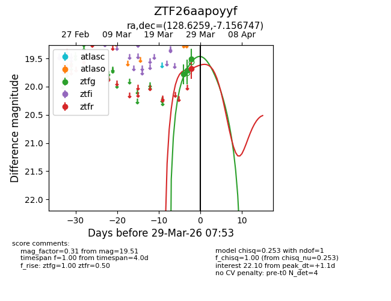
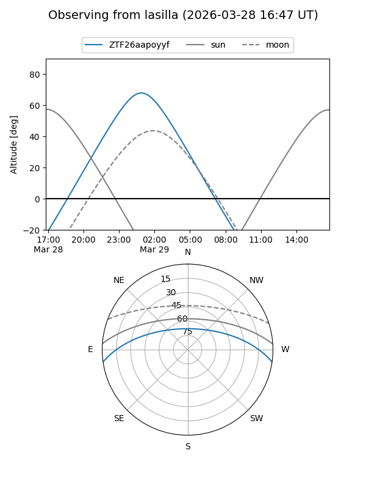
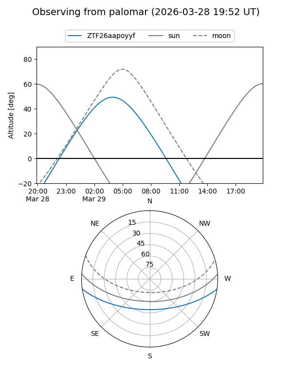

ZTF26aapoyyf
Target ZTF26aapoyyf at 2026-03-29 07:56
Aliases and brokers:
FINK: link
Lasair: link
ALeRCE: link
alt names
ZTF26aapoyyf (ztf,fink_ztf)
Coordinates:
equatorial (ra, dec) = 128.6259,-7.15675
equatorial (HMS+DMS) = 08:34:30.22,-07:09:24.29
galactic (l, b) = (231.9248,+19.09034)
Flags:
Photometry:
last ztfg=19.51, ztfr=19.68
3 ztfg, 1 ztfr detections
Lightcurve

Visibility


Additional plots